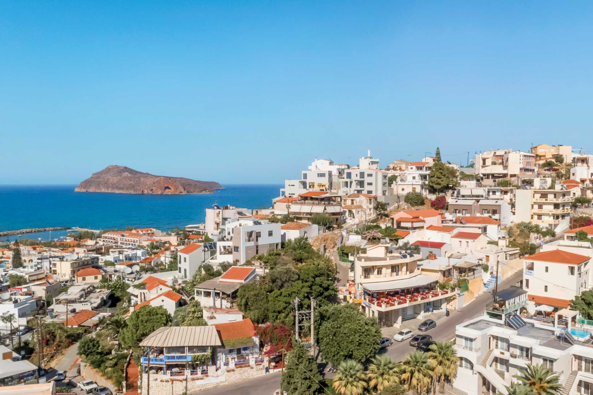

Kreta

Jeg ønsker meg en fet guttetur til varmen med raki, mytos, bading, gyros og lammekoteletter.
1. Varmen, omgivelsene, folka, maten, drikka, havet
2. Drosia, Antonis Diktatis
3. Ideal beach, parfyme, snacks
Fakta om Kreta
Kreta er i Hellas
De snakker gresk der og betaler med euro
Beste tid å reise dit er seint på våren, tidlig på sommeren og tidlig høsten